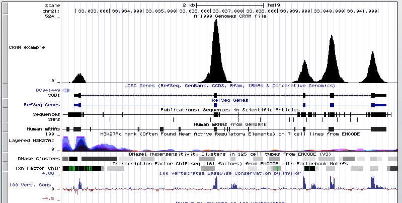

The UCSC Genome Browser is capable of displaying both the BAM and CRAM file formats. While BAM files contain all sequence data within a file, CRAM files are smaller by taking advantage of an additional external "reference sequence" file. This file is needed to both compress and decompress the read information.
Since CRAM files are more dense than BAM files, many groups
are switching to the CRAM format to save disk space. For CRAM tracks to load there is an expectation
that the checksum of the reference sequence used to create the CRAM will be in the CRAM header. A
file with a matching checksum is also expected to be accessible from the EBI RefGet CRAM reference registry
(see References for CRAM resources). Otherwise, users must specify a
refUrl setting that will point to a server that is offering up the reference sequences
(see Example Four).
Since the loading of CRAM data requires the specific reference sequence used to create the CRAM
file, it is very important that the exact same reference sequence is used for compression and
decompression. When a CRAM file is first loaded on a given chromosome, a check for the preexistence
in a special browser "cramCache" directory of the specified reference checksum will take
place. If the reference sequence information specific for that CRAM for the currently viewed
chromosome region does not exist, a message will display about the file not being found along with
a note about downloading the reference from the EBI CRAM reference registry if it is available or
from another Refget server using the refUrl setting. A refresh of the page once the download is
complete will display the CRAM data as if it were a BAM file.
The track lines to describe CRAM tracks are identical to track lines for BAM tracks. This includes
the type parameter, which is still bam even for CRAM tracks. The only
difference is that instead of providing the URL to a BAM file, the URL instead points to a CRAM
file.
Please also note that just as a BAM file requires an associated BAM.bai index file, a CRAM file will require an associated CRAM.crai index file in the same location to load.
Here is an example CRAM track that displays around the gene SOD1 on hg19 that can be cut and pasted as text into the Custom Tracks page:
track type=bam db=hg19 name=exampleCRAM bigDataUrl=http://genome.ucsc.edu/goldenPath/help/examples/cramExample.cram
Please note at the above URL location there is also a
http://genome.ucsc.edu/goldenPath/help/examples/cramExample.cram.crai file. If this .crai file is at a different URL,
the bigDataIndex=<URL> option must be added.
Clicking this following link will also load the above track. The information following
hgct_customText is equivalent to pasting the text in to the Custom Tracks page:
http://genome.ucsc.edu/cgi-bin/hgTracks?db=hg19&position=chr21%3A33031597-33041570&hgct_customText=track%20type=bam%20name=exampleCRAM%20bigDataUrl=http://genome.ucsc.edu/goldenPath/help/examples/cramExample.cramIf the URL to a CRAM file ends with .cram, you can paste the URL directly into the custom track management page, click submit and view it in the Browser. The track name will then be the name of the file. If you want to configure the track name and descriptions, you will need to create a track line, as shown in the above example. Learn more about track line options and configuring custom tracks here.
Here is an example URL to a CRAM file from the 1000 Genomes Project that can be pasted directly into the Custom Tracks page:
ftp://ftp.1000genomes.ebi.ac.uk/vol1/ftp/phase3/data/HG00096/exome_alignment/HG00096.mapped.ILLUMINA.bwa.GBR.exome.20120522.bam.cram
You can see by adding the above link the Browser automatically assigns the type=bam and
the track name=HG00096.mapped.ILLUMINA.bwa.GBR.exome.20120522.bam to the created track
to browse.
Clicking the following image will load a CRAM file from the 1000 Genomes Project. 
This CRAM display takes advantage of using the new "density graph" feature where the bam.cram reads are displayed as a bar graph by checking the box next to "Display data as a density graph" on the Custom Track Settings page.
The CRAM format is also supported in track hubs. Below is an example trackDb.txt stanza that would
display a CRAM files from the 1000 Genomes Project. To learn more about using Track Hubs see the
User Guide and associated Quick Start Guides to
building hubs. Note that type bam is used to display CRAM files in hubs, just as
type bam is used in custom CRAM tracks.
track cram61
type bam
shortLabel HG00361
longLabel This CRAM file is from the 1000 Genomes Project HG00361
visibility pack
bigDataUrl ftp://ftp.1000genomes.ebi.ac.uk/vol1/ftp/phase3/data/HG00361/exome_alignment/HG00361.mapped.ILLUMINA.bwa.FIN.exome.20120522.bam.cram
For genomes that are not registered in the EBI CRAM Reference Registry,
the refUrl setting is used to point the browser to
the appropriate place to find the reference sequence. The refUrl setting is used with
the URL of the reference server, such as refUrl http://university.edu/URL/cramRef/%s
where the %s gets replaced by the RefGet MD5 checksum which identifies the reference
sequence.
The example below shows a hub track stanza using the refUrl setting:
track cramExample
type bam
visibility full
shortLabel cramExRefUrl
longLabel This CRAM file points to a reference sequence specified by refUrl
refUrl http://university.edu/URL/cramRef/%s
bigDataUrl ftp://ftp.1000genomes.ebi.ac.uk/vol1/ftp/phase3/data/HG00096/alignment/HG00096.mapped.ILLUMINA.bwa.GBR.low_coverage.20120522.bam.cram
The use of refUrl can also be employed on a custom track line:
track type=bam db=hg19 name=cramExRefUrl
refUrl=http://university.edu/URL/cramRef/%s
bigDataUrl=ftp://ftp.1000genomes.ebi.ac.uk/vol1/ftp/phase3/data/HG00096/alignment/HG00096.mapped.ILLUMINA.bwa.GBR.low_coverage.20120522.bam.cram Below is a collection of helpful CRAM resources:
If you would like to share your CRAM data track with a colleague, learn how to create a URL by looking at Example 11 on this page.
To find documentation on how to set up CRAM support on a mirror of the UCSC Genome Browser please see this following README.cram file.